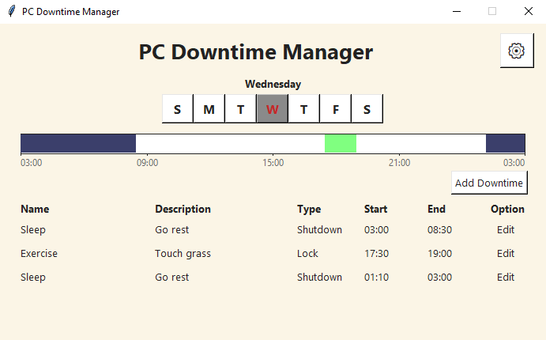
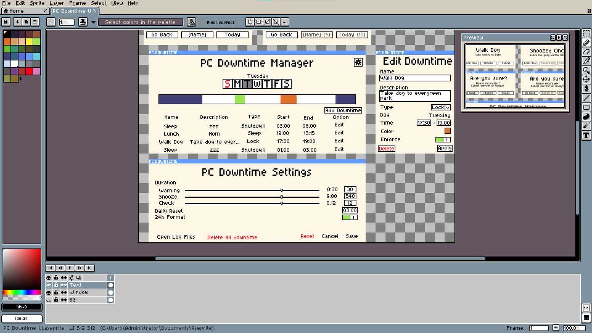
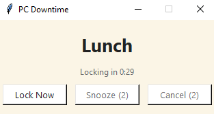
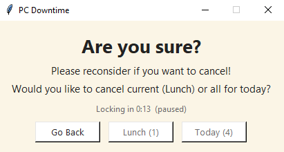
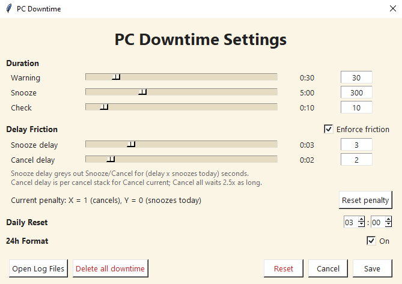
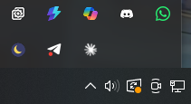

Personal project
PC Downtime
Automatically lock, sleep or shut down your PC for a timely break.

Overview
PC Downtime is a small Windows utility that schedules breaks away from the computer. Each downtime has a name, a time window and an action: lock, sleep or shut down. When a downtime starts, the app warns you, counts down, then takes the action for you.
It started from a personal problem: “one more minute” at the desk easily becomes an hour. Most timers are too easy to dismiss, so the core design question was how to make skipping a break possible, but deliberately inconvenient.
Requirements first
Before writing any code I wrote the specification: 17 functional and 4 non-functional requirements, 5 use-case scenarios and 4 UI layout pages. I sketched the screens as pixel mockups in Aseprite so the layout was settled before implementation.

Adding friction
When a downtime is about to start, a popup counts down and offers Lock Now, Snooze or Cancel. Snoozing and cancelling are allowed, but each use adds a delay before the buttons can be pressed again, so repeatedly bypassing a break gets slower every time.


The settings page exposes the warning, snooze and check durations, the friction delays, the daily reset time and a 24-hour clock option. The app lives in the system tray so it keeps running in the background.


Building it with Claude Code
I used Claude Code to generate the implementation from my requirements, then reviewed the code and manually tested each behaviour against the specification. The project was a good exercise in writing requirements precise enough for someone else, human or AI, to build from.